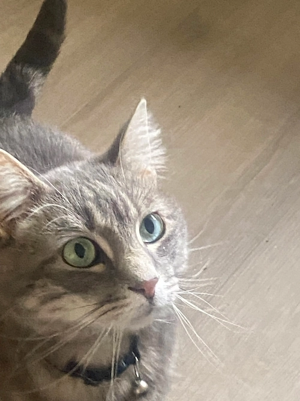

Felis Catus

Ode to Spot
by Data from Star Trek TNG
Felis catus is your taxonomic nomenclature,
An endothermic quadruped, carnivorous by nature;
Your visual, olfactory, and auditory senses
Contribute to your hunting skills and natural defenses.
I find myself intrigued by your subvocal oscillations,
A singular development of cat communications
That obviates your basic hedonistic predilection
For a rhythmic stroking of your fur to demonstrate affection.
A tail is quite essential for your acrobatic talents;
You would not be so agile if you lacked its counterbalance.
And when not being utilized to aid in locomotion,
It often serves to illustrate the state of your emotion.
O Spot, the complex levels of behavior you display
Connote a fairly well-developed cognitive array.
And though you are not sentient, Spot, and do not comprehend,
I nonetheless consider you a true and valued friend.
Louise Miguel
Likes: His favorite pastimes include staring at passers by, napping in a sunbeam, or napping in front of the heater. When he wants to be pet, he will come over and rub himself across your face.
Dislikes: He is not a fan of being picked up, and while he won't freak out, he will get out of your hands as soon as is feasible. He also hates new surroundings, and hides as much as he is able.
Habits: Will overeat if allowed to. Tends to sleep on people's legs at night, and will brave unfamiliar environs to do it. Will try to gnaw on your hand, without the pressure to break skin. Just stay still for a bit.
History: He was my sister's cat for 6 years until he bit her kids several times (see habits above) and she gave him to me. After 1-2 months, he finally warmed up to me and began sleeping on my legs and in the open. He was named after the Mexican singer because of how much he meows.